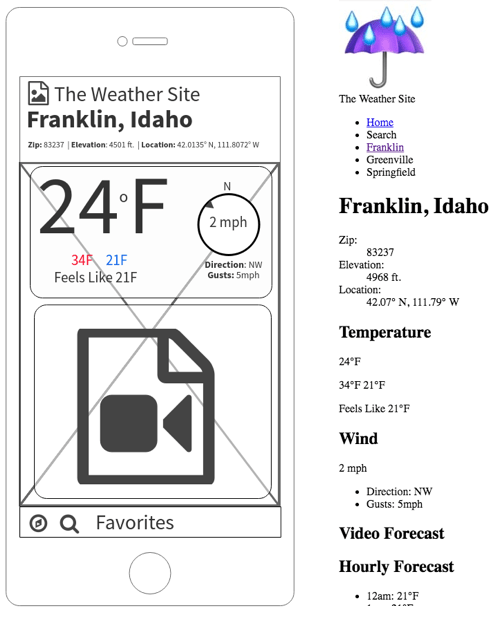

Franklin - Layout
Overview
Last week we started build our weather site by writing the HTML for the first page...Franklin. You may have noticed that while we followed the wireframe closely to make sure we got all of the content onto the page, the final product didn't look very much like the wireframe. We are going to fix that this week with CSS.
Adding CSS
From the readings hopefully you recall that there are 3 ways to add CSS to HTML.
- Inline
- Internal Stylesheets
- External Stylesheets
Inline should only be used for troubleshooting and other very specific circumstances. Internal stylesheets and external stylesheets are actually very similar, but external are superior in one very important way: they are much more reusable...the same stylesheet can be attached to all the pages of a site.
We will be using external stylesheets exclusively for this course.
Tasks
- Review the small wireframe to remind yourself of how it should look...where the different elements are in relation to each other. Keep it handy as we will be referring back to it often.
- Create a new file in your editor and save it in the css folder (this could be in your main site or in the weather folder) with a name that keeps in mind the naming rules we talked about earlier. This new file will not end with .html however. This time we need a .css extention on the file. I often name my primary stylesheet something like screen.css if it is intended to style a page meant for a screened device.
File extensions
So what is up with these very particular rules for naming these files? Last week we needed a .html, this week requires a .css. These multi-character additions to our filenames are called extensions and are used by the operating system to identify the file type.
Almost all files have these actually...but a few years ago the operating systems developers decided that people didn't need to see them anymore and so they are hidden by default on Windows and Mac OS.
If we don't name our HTML and CSS files with these extensions the browser will not know how to interpret them correctly...in other words our html and css will not look like we want it to.
-
Lets add a bit of CSS to our new file. Enter the following:
* {
box-sizing: border-box; /* changes width property
to total width instead of content width */
}
*:before, *:after{
box-sizing: border-box;
}
article,
aside,
footer,
header,
nav,
section,
main,
figcaption,
figure {
display: block; /* just in case we have
any older browsers that don't recognize
the HTML5 semantic elements */
}
body {
margin: 0; /* remove any margin from body */
padding: 0; /* ditto for padding */
}
Hopefully that looks somewhat familiar. You should notice the css pattern of
selector {
property: value;
}that was in the reading repeated 3 times. The top selector is one you may not have seen before. It is called the universal selector and will select every element on the page. It should be used carefully, but in this case it is necessary to switch how our browser calculates width.
You may now have two "body" selectors: one for the helvetica font and the second to remove the default margins and padding. If so, combine the rules into one and delete the other one. We only want a single CSS rule for the body.
The next rule is a 'just in case' sort of thing. Older browsers won't recognize the HTML5 semantic elements, so this rule gives them a bit of guidance so that our page does not break.
The third rule removes any margin and padding from the body element. If we don't do this sometimes you will get an small gap around your page that might not be desirable.
If the code above looks completely confusing to you then make sure to revisit your notes or the readings from this unit...and you should also seek out some help as well. W3schools again has a good CSS tutorial. If the code above troubles you spend some time working through the first 3-4 sections of that tutorial.
-
The next step is to connect our CSS to our HTML. This is done with the <link> element.
The tag should look something like this:
<link rel="stylesheet" type="text/css" href="/css/screen.css" media="screen">Add this line if you don't have it yet in the <head> portion of your page now. The href="screen.css" would indicate that I have a stylesheet called "screen.css" in the css directory. If your file is not called "screen.css" change that to whatever you named your file. If you don't have a directory to store all your css in (very common practice) then do so and move your css file into the directory. Once having done so, adjust your path to make sure the css is being read.
Check your page now in the browser. If everything is linked up correctly you should see most of the text flush against the left side of the browser window. If not, something went wrong and it's time for a bit of troubleshooting.
The first thing to check is that your CSS is linking correctly with your HTML. Open up the browser developer tools console. (alt+cmd+J on the Mac in chrome or ctrl+shift+J on Windows. Chrome keyboard shortcuts, or you can right-click and "inspect element" then click on the Console tab)
Do you see any errors? If you see a "Failed to load resource" error it means the browser cannot find your css file...check the path in the href attribute of the link element.
If you don't see any errors in the console then you probably have an error in your css. Validate!
-
Now we are ready to start adding CSS to layout our page. Before we can do that however we need to know what exactly needs to be done. Pull up your franklin html page in the browser and set it to a mobile size...then pull up the small wireframe next to it so you can compare. This is what I see:
Take a few minutes and make a list of all of the changes that you see that need to happen...the steps to get from right to left. Be as specific as you can. Once you have made your list click below and compare your list with mine. Don't peek until after you make your list!
To Do
- Make the "Weather Site" name larger and bolder. Perhaps give it some space to the left. Hmmm, maybe center it vertically to the logo?
- Remove the bullets from the list of links and remove the default padding from the list.
- Make the links flow horizontally, and take up an equal amount of space each.
- Correct the height on the navigation bar.
- Move the navigation bar to the bottom.
- Add a bit of space on the bottom of the page so that the footer is not hidden by the navigation bar.
- Make sure that the main blocks that make up our page flow vertically.
- Make sure the main blocks that make up our page are centered, but not the text inside of them.
- Make the current condition summary icon and high/low flow horizontally, with each one on the right edge and one on the left edge
- Hide the bullets for the other data and have the content sit to the right of the labels.
How did you do? If you got all of them great job! If you got all but e. and f., again great job! Those two in particular are not very apparent if you haven't done something like this before.
If I had come to you with the screenshot above and said "Make the right side look like the left" and then walked away, how would you have reacted? I would imagine in the class the reactions would have ranged from confidence to terror! Taken as a whole moving from the one to the other is a bit much to contemplate. The exercise that you did where you broke down the large task into as small of steps as you could is called critical or analytical thinking or problem solving. This is a valuable (critical) skill in just about every field.
Making a list as we have will normally take a problem that might appear beyond our abilities and turn it into something we can imagine ourselves doing. Look at the top item in the list: "Make the site name larger and bolder." Is that something that you know how to do? Is it something that you could figure out how to do? I would say yes.
I would encourage you to approach all of your assignments this way. Start by figuring out in plain language what needs to happen, then translate those steps into HTML/CSS/JS. If you make your steps small enough, the translation of each step is often very easy.
"...by small and simple things are great things brought to pass;" Alma 37:6
-
Armed with our list we can now start working on the items. We will start together, and leave the remainder for you to finish up. Lets start with main portion of our page...items g and h.
My HTML looks like this for that portion of the page:
<main>
<section class="overview">
...
</section>
<section class="cur_conditions">
...
</section>
<section class="hourly"> <!-- you may not have this section yet -->
...
</section>
</main>The elements we want to make sure are flowing vertically are the sections that most of our content is in. The parent of those elements is main. Fortunately for us, the default behavior of section element is to "stack" vertically. Because of that we can checkoff item g.
Getting them to be centered horizontally can be done, but we'll wait until next week, after you have been introduced to Flexbox, to do that. So, item h. is on hold for right now.
-
Lets tackle the navigation next, items b, c, d and e.
We can write two lines of CSS to address two of our tasks. Try adding the following rule:
ul li {
display: inline-block;
list-style: none;
}What happened? The list of links should have switched to a horizontal flow...but we have a potential problem. Our selector said change all unordered list items...and it did. But, we may not want all unordered lists to do this. We need to be more specific so that only the unordered lists that we want change and not all of them.
Take a minute to review this selector list do you see anything there that might let us select the nav list items but not all list items?
Did you notice the " " (space) selector. It is know as the descendant selector. According to W3schools div p would do this: "Selects all <p> elements inside <div> elements". The ul we want to target is inside of a nav, and the other is not. Sounds hopeful.
Modify your css to use the descendent selector to make sure we only get ul li elements that are inside of nav elements. You will know you have it right when the items in the navigation bar are horizontal and the others on the page are vertical.
You may have noticed that our list is very short now. Thus item d. If you go to W3schools and search for "height" you should get a few hits. The two that look the most promising to me are height and line-height. Try using each of those to increase the height of your navbar. Make sure to notice the difference between their behavior.
On the wireframe the navbar is actually on the bottom of the screen. The easiest way to move something like that is by using the position property. In this case we want to move the entire nav element, and a value of absolute or fixed would work. Try the following CSS:
nav { position: fixed; bottom: 0; left: 0; }Basically that tells the element to use the fixed positioning, and to have the left edge of the element on the left side of the screen (left: 0) and the bottom edge of the element on the bottom of the screen. Try taking off the left property to see what happens. Or, change the 0 to another value.
-
The first item in the list deal with the title at the top. The first thing we should do here is to make sure that our HTML is structured correctly. We can save ourselves a lot of time and effort by doing this. My HTML for that portion of the page looks like this:
<header id="page-header">
<img src="/images/plan-images/logo.jpeg" alt="Weather Site Logo">
<span class="site-name">Weather Site</span>
</header>I needed some way of controlling this header and differentiating it from other headers that may be added to the page later, so I added an id attribute with a value to the page's header, named page-header. I can now use that to write some CSS. First step above was to take our site name "Weather Site" and work with it. To control just this portion of the content I added a class to it. The span has no default values, just plain text. The rule might look like this:
.site-name { font-size: 2em; font-weight: 600; }The font-size property does exactly what it sounds like, it tells the browser to change the size of the font. The value of "2em" basically says, double the size of whatever the font currently is. Review the "em" measurement unit - https://www.sitepoint.com/power-em-units-css/.
The font-weight property determines the thickness of the lines that make up the font. The value of 600 is out of a possible of 900, so it is half again thicker than normal, which is 400.
As with the centering of the boxes, we'll wait until next week, after your exposure to Flexbox, to see if we can change the vertical alignment of the site name to center align vertically with the logo.
-
We have now worked through most of our list...there are a few items left for you (f., i. and j.). Complete the layout of the Franklin weather page by completing the rest of the list items.
- Validate your page. Make sure to check both the HTML and CSS now. The easiest way to do this would be to use the Developer tools you installed in the second week. Fix all errors.
- Make sure the link on your temporary homepage to this page is still working properly. Then make sure to commit and sync your work in Github Desktop. Check your URL (should look like githubusername.github.io) to make sure all of your changes show, and to check that your images all work.
Grading Matrix
Objective 2 - 15 points
- Layout looks like the small wireframe. Only content from the small wireframe is shown - 3 points
- All CSS is applied with an external stylesheet - 3 points
- CSS is organized with whitespace and comments - 3 points
- Responsiveness: The page layout renders in a mobile size screen without requiring zooming or horizontal scrolling - 3 points
- The page is valid CSS3 - 3 points